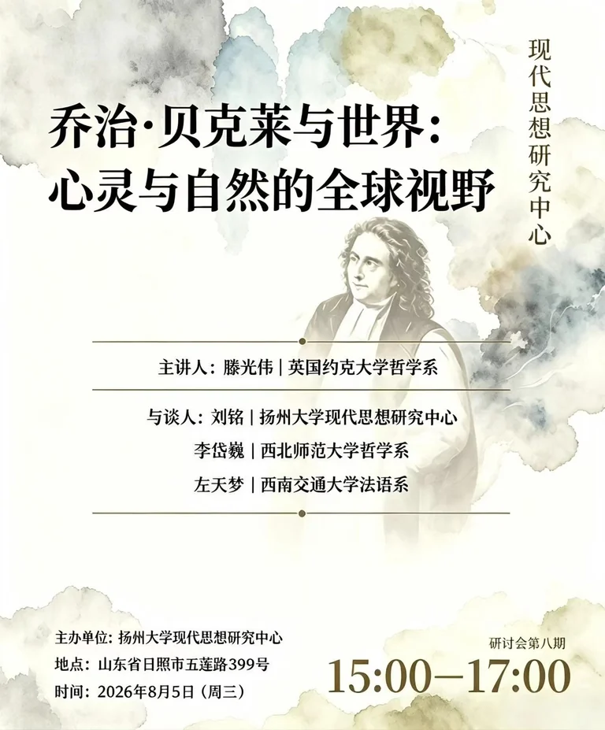

活动概述
2026 年 8 月 5 日，扬州大学社会发展学院现代思想研究中心系列工作会继续在山东日照举行。本场会议以“乔治·贝克莱（George Berkeley）与世界：心灵与自然的全球视野”为主题，同时讨论集刊建设、青年学者培养和 2027 年贝克莱国际学术会议筹备等内容。
主题发言
英国约克大学哲学系博士研究生滕光伟作主题发言。他提出，理解贝克莱不宜停留在“存在即被感知”的概括，而应将其置于 18 世纪的知识交往与思想流动中，考察他如何回应机械论自然观中的物质实体难题，并重新安排心灵、感知与自然的关系。
对谈与研究议题
在对谈环节，刘铭从实验哲学和洛克性质学说出发讨论贝克莱的思想史位置，尤其关注其对法国近代哲学的影响问题；李岱巍分析“无物质的自然”在形而上学层面的解释压力；左天梦借助法语文献梳理贝克莱思想在欧洲大陆的早期翻译、接受与批评。
集刊建设与国际交流
会议提出，第三期集刊拟聚焦笛卡尔研究，吸收意大利、法国等地的最新研究成果，并与中心近期研究工作相结合。中心近期拟邀请法国学者皮埃尔·格南西亚（Pierre Guenancia）以及意大利萨兰托大学朱莉娅·贝尔焦约索（Giulia Belgioioso）等笛卡尔研究学者访华，具体人员、时间和活动以后续正式确认为准。
中心主任刘铭表示，书系与集刊应逐步向近代哲学和纯学术研究深入，通过翻译、研究和出版的结合建设稳定的学术团队。
青年学者培养
与会者建议从文献译介和研究基础相对薄弱、问题意识明确的领域入手，先完成版本、目录、术语和基础文献的系统整理，再形成专题研究。对尼古拉·马勒伯朗士（Nicolas Malebranche）、布莱兹·帕斯卡（Blaise Pascal）等思想体系较为庞大的研究对象，可从概念、文本或具体争论入手，避免笼统作通论。会议同时强调外语、哲学史和学术写作训练，并建议在集刊编辑、文献翻译和学术交流的实际工作中提升研究能力。
2027年贝克莱国际学术会议筹备
围绕 2027 年贝克莱国际学术会议，滕光伟建议将其定位为一场在中国及东亚范围内最高规格的、以贝克莱为核心议题的多日国际会议。刘铭表示，会议的意义不仅在于展示中心的研究工作，也在于建立长期国际学术联系，为师生提供参与学术交流和会议组织的实践机会，更好地展示中文世界的学术研究。为推进筹备工作，现代思想研究中心正式成立“2027年贝克莱国际学术会议工作小组”。
活动照片